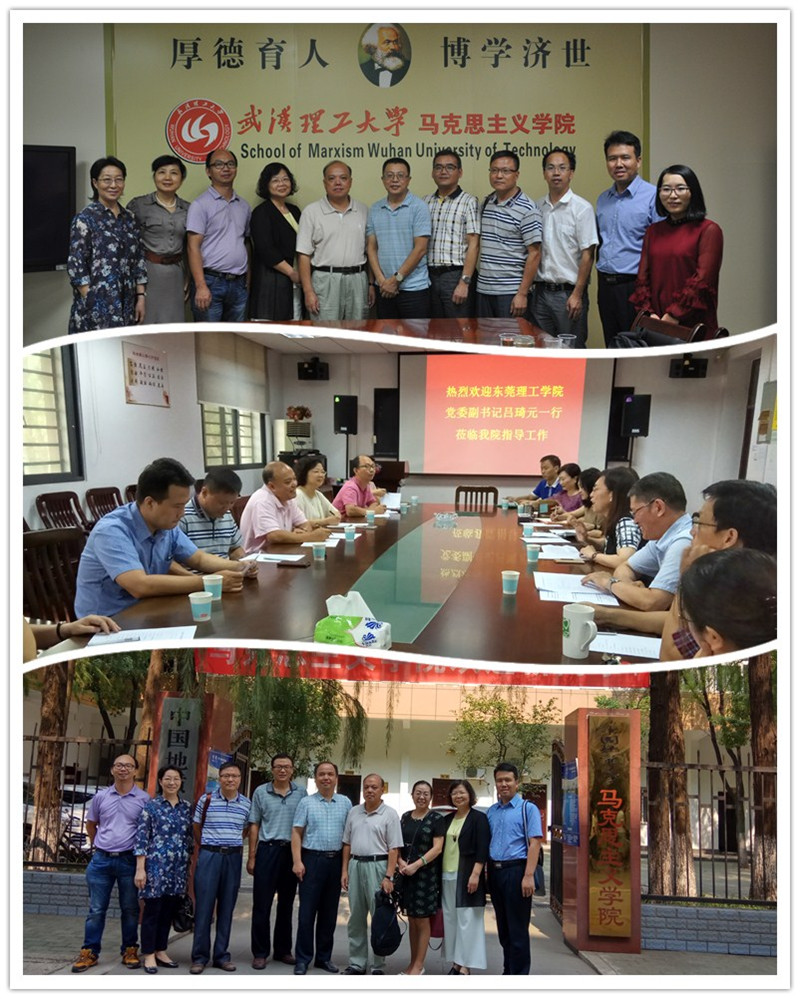

莞工要闻 |
放回首页 |
吕琦元带队赴武汉高校马克思主义学院学习调研
| 发布单位:新闻中心 | 更新时间：2017-09-25 | 访问量：66666 | 字体大小：大 中 小 |
9月25日至27日，党委副书记吕琦元带领宣传部、思政部等单位负责人和部分教师赴武汉，对华中科技大学、武汉理工大学、中国地质大学（武汉）三所高校马克思主义学院进行专题调研。
本次调研的主题包括高校马克思主义学院建设与发展、思想政治理论课程建设、马院学科建设、人才队伍建设、科研平台建设及服务社会等主题。考察组得到受访高校同行的热情接待和毫无保留的经验介绍。三所高校作为较早成立马克思主义学院的学校，其共同特点是：学校领导高度重视马克思主义学院建设，在经费、政策、人才引进等方面均给予了大力支持；高度重视思想政治理论课程质量建设，在集体备课、互动教学、案例汇编、实践教学等方面重点着力，成效显著；科研成绩突出，武汉理工大学、华中科技大学正在创造条件进入国家重点建设马院行列；教师高度敬业，涌现了一批爱岗敬业的优秀思政教师，如郭关玉博士积极进行教改，得到学生真心喜爱，荣获“全国高校思想政治理论课教师2014年度影响力提名人物”称号；管理民主规范，通过制度建设促进学院规范管理，充分调动教师积极性。 调研结束后，大家表示，此次考察开拓了视野，统一了认识，升华了思想，对我校筹建马院大有裨益。
